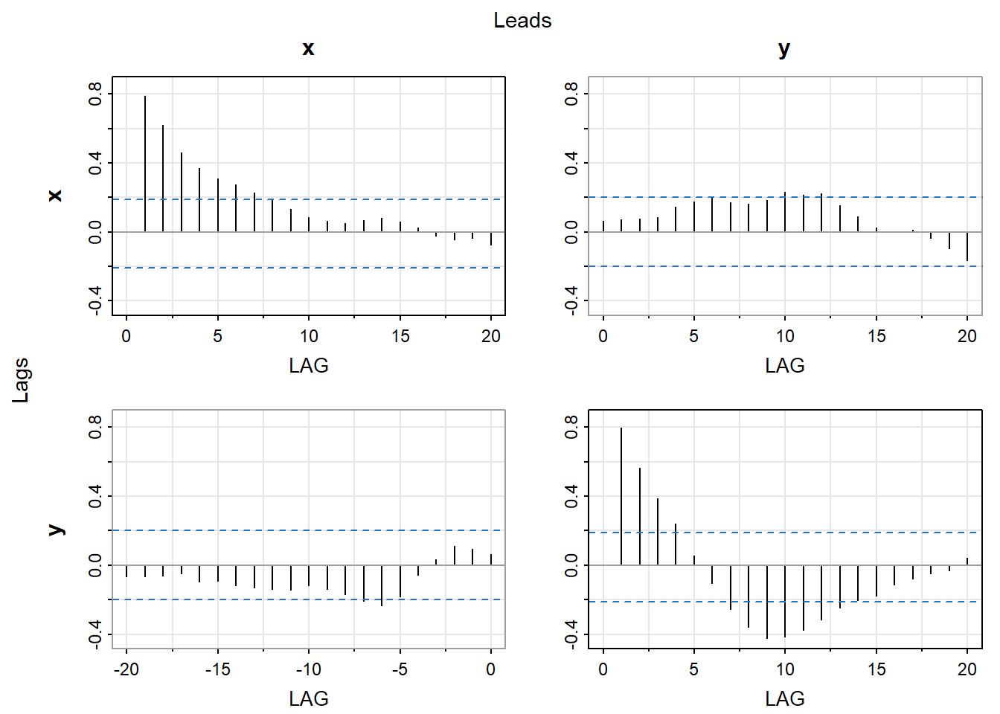

439/639: Vector Time Series and Spurious Correlation
Author
Dr Sergey Kushnarev
1 Cross-covariance and Cross-correlation Functions
Cross-covariance and cross-correlation functions are used to analyze the relationship between two time series. The cross-covariance function measures the covariance between two time series at different lags, while the cross-correlation function measures the correlation between two time series at different lags. \[
\gamma_m(x,y) = Cov(X_t, Y_{t+m})
\]
Cross-correlation function is defined as: \[
r_m(x,y) = \frac{\gamma_m(x,y)}{\sqrt{\gamma_0(x,x)\gamma_0(y,y)}}
\]
where \(\gamma_0(x,x)\) and \(\gamma_0(y,y)\) are the variances of the time series \(x\) and \(y\), respectively. The cross-correlation function is a normalized version of the cross-covariance function, which allows for easier interpretation and comparison between different time series.
Often cross-correlation function is displayed in a grid of plots, where each plot shows the cross-correlation function between two time series at different lags. This allows for a visual representation of the relationship between the two time series and can help identify any patterns or trends in the data.
Code
# Load required packageslibrary(TSA)set.seed(639)X=rnorm(105) Y=zlag(X,2)+0.5*rnorm(105)X=ts(X[-(1:5)],start=1,freq=1)Y=ts(Y[-(1:5)],start=1,freq=1)# Make X, Y a multivariate time serieslibrary(astsa)X=ts(X,start=1,freq=1)Y=ts(Y,start=1,freq=1)XY <-ts(cbind(X, Y), start =1, frequency =1)# Cross-covariance functionacfm(XY)
1.1 Bartlett’s Theorem for Sample Cross-Correlation Function
Bartlett’s theorem states that the sample cross-correlation function converges to the true cross-correlation function as the sample size increases. This means that as the number of observations in the time series increases, the sample cross-correlation function will become a more accurate estimate of the true cross-correlation function.
where \(\rho_k(X)\) and \(\rho_k(Y)\) are the autocorrelation functions of the time series \(X\) and \(Y\), respectively.
The term \(2\sum_{k=1}^\infty\rho_k(X)\rho_k(Y)\) often result in inflation of the variance of the sample cross-correlation function, which can lead to misleading conclusions about the relationship between the two time series. This is particularly important when analyzing time series data with long memory or strong autocorrelation, as these characteristics can significantly affect the sample cross-correlation function.
In the example of \(X_t\sim AR(1)\) and \(Y_t\sim AR(1)\) the variance becomes: \[
\frac{1}{n}\frac{1+\phi_X\phi_Y}{1-\phi_X\phi_Y}
\]
Code
set.seed(639)library(astsa)x <-rnorm(100)y <-rnorm(100)xy <-ts(cbind(x, y), start =1, frequency =1)acfm(xy)
Code
ccf(xy[,1], xy[,2], lag.max =20, main ='Cross-correlation function of X and Y')
Code
x <-arima.sim(model =list(order =c(1, 0, 0), ar =0.8), n =100)y <-arima.sim(model =list(order =c(1, 0, 0), ar =0.8), n =100)xy <-ts(cbind(x, y), start =1, frequency =1)acfm(xy)

1.2 Prewhitening
Prewhitening is a technique used to remove the effects of autocorrelation from a time series before analyzing the cross-correlation between two time series. This is particularly important when the two time series have strong autocorrelation, as this can lead to misleading conclusions about the relationship between the two time series.
Code
set.seed(123)x <-arima.sim(n =100, model =list(ar =0.9))y <-0.5* x +arima.sim(n =100, model =list(ar =0.9))ccf(x,y)
Our first example of this section is a sales and price dataset of a certain potato chip from Bluebird Foods Ltd., New Zealand. The data consist of the log-transformed weekly unit sales of large packages of standard potato chips sold and the weekly average price over a period of 104 weeks.
We see strong contemporaneous correlation between the two series. Therefore the model should be \[
Log.sales_t = \beta_0 + \beta_1 Price_t + \epsilon_t
\] The model can be estimated using OLS regression.
Call:
lm(formula = sales ~ price, data = bluebird)
Residuals:
Min 1Q Median 3Q Max
-0.54950 -0.12373 0.00667 0.13136 0.45170
Coefficients:
Estimate Std. Error t value Pr(>|t|)
(Intercept) 15.890 0.217 73.22 <2e-16 ***
price -2.489 0.126 -19.75 <2e-16 ***
---
Signif. codes: 0 '***' 0.001 '**' 0.01 '*' 0.05 '.' 0.1 ' ' 1
Residual standard error: 0.188 on 102 degrees of freedom
Multiple R-squared: 0.7926, Adjusted R-squared: 0.7906
F-statistic: 389.9 on 1 and 102 DF, p-value: < 2.2e-16
Analyzing the residuals of the model, we see that they are not white noise. This indicates that there is still some autocorrelation present in the data, which suggests that the model may not be fully capturing the relationship between the two time series.
Code
acf(residuals(chip.m1),ci.type='ma')
Code
pacf(residuals(chip.m1))
Code
eacf(residuals(chip.m1))
AR/MA
0 1 2 3 4 5 6 7 8 9 10 11 12 13
0 x x x x o o x x o o o o o o
1 x o o x o o o o o o o o o o
2 x x o x o o o o o o o o o o
3 x x o x o o o o o o o o o o
4 o x x o o o o o o o o o o o
5 x x x o x o o o o o o o o o
6 x x o x x x o o o o o o o o
7 x o x o o o o o o o o o o o
Note that the regression coefficient estimate on Price is similar to that from the OLS regression fit earlier, but the standard error of the estimate is about 10% lower than that from the simple OLS regression. This illustrates the general result that the simple OLS estimator is consistent but the associated standard error is generally not trustworthy.